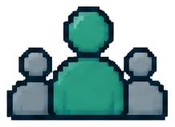

Framed the objective in seller language and connected it to the customer conversation.
Live Training / Sales Enablement
Virtual MEDDPICC Sales Workshop
I facilitated assigned MEDDPICC modules for internal sellers and external partners in U.S. and international virtual workshops. I used discussion, polling, seller examples, and live reframing to check understanding, then adjusted the delivery based on what the room needed.
MEDDPICCVirtual FacilitationInternal SalesChannel PartnersGlobal Audiences
RoleFacilitator for assigned MEDDPICC modules
AudienceInternal sellers + external partners
ReachU.S. + international
FormatMulti-session virtual workshop
Facilitation Cycle
I used a familiar facilitation cycle: frame, check understanding, adapt, then apply and debrief.
Choose a stage to see the facilitation move, the learner signal I watched for, and how I adjusted the session.
Frame
Connect the objective to the seller task.
I opened the module by making the expected behavior and relevance clear before adding framework detail.
Learners could explain why the concept mattered before we moved deeper.

AudienceRead the Room
The learner signal changed what I did next.
Choose a signal to see the live response.
The distinction was not stable yet.
I slowed down, changed the example, and checked the distinction again before moving on.
Scope note: I facilitated assigned modules within a larger MEDDPICC workshop program. Employer names, participant details, proprietary materials, recordings, and private performance data are omitted.